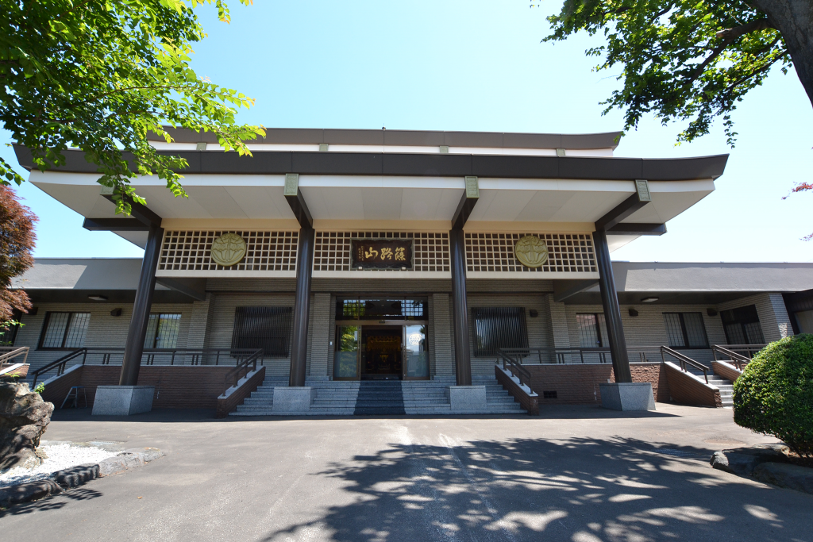
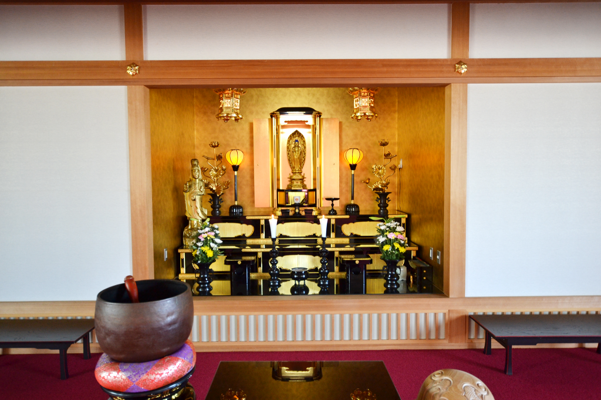
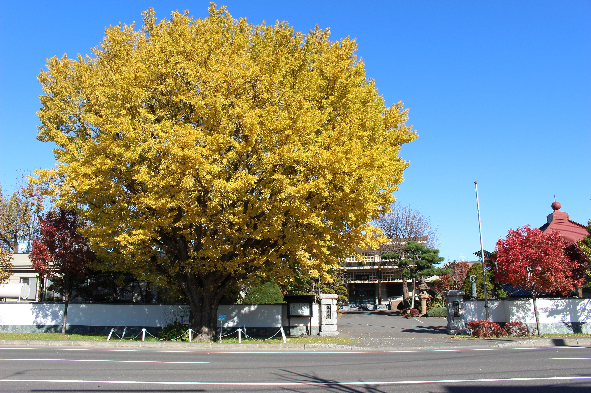

境内案内
本堂

ここに文章が入ります。ここに文章が入ります。ここに文章が入ります。ここに文章が入ります。
安養殿

ここに文章が入ります。ここに文章が入ります。ここに文章が入ります。ここに文章が入ります。
昇龍殿
ここに文章が入ります。ここに文章が入ります。ここに文章が入ります。ここに文章が入ります。
龍雲寺のイチョウ
篠路開拓者の心のよりどころだった龍雲寺に、鋤柄松太郎が新天地開拓の記念として植えました。樹齢100年を越えています。
荒井金助と早山清太郎
ゆかりの地
篠路開拓で中心的な役割を果たした荒井金助・早山清太郎両名のお墓があります。 江戸時代末期、幕吏新井金助は石狩地方開拓のため、発寒にいた「在住武士」早山清太郎に命じて篠路を調査させ、農民を入植させました。 早山は、石狩地方で初めて米作りに成功したのを始め、篠路の開墾、道路開削などに貢献し、明治維新前後の札幌開拓の基礎を築きました。